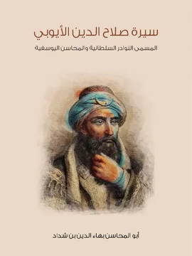

سيرة صلاح الدين الأيوبي: المسمى النوادر السلطانية والمحاسن اليوسفية

قراءة عربية أصلية محددة النطاق في الصفحات 9 إلى 14 من ملف PDF المرتبط، وليست تلخيصا كاملا للكتاب. نناقش ما تدعمه هذه المقاطع فقط.
سيرة صلاح الدين: المولد بتكريت والتربية في بعلبك
يفتتح ابن شداد سيرته بالقسم الأول في ذكر مولد صلاح الدين وخصائصه وأوصافه وشمائله: كان مولده على ما بلغه من ألسنة الثقات في شهور سنة اثنين وثلاثين وخمسمائة بقلعة تكريت، وكان والده أيوب بن شاذي واليًا بها، كريمًا أريحيًّا حليمًا حسن الأخلاق، ثم انتقل إلى الموصل فأقام بها صلاح الدين حتى ترعرع، وكان والده وأخوه أسد الدين شيركوه محترمين عند أتابك زنكي، ثم أُعطي والده بعلبك فأقام بها في خدمة والده يتربى تحت حجره حتى بدت منه أمارات السيادة، فقدمه نور الدين محمود بن زنكي وقربه وخصه. ثم يذكر ما شاهده من مواظبته على القواعد الدينية: كان حسن العقيدة كثير الذكر لله، أخذ عقيدته على الدليل بواسطة البحث مع مشايخ أهل العلم، وقد جمع له الشيخ قطب الدين النيسابوري عقيدة تجمع ما يحتاج إليه، كان من حرصه عليها يعلمها الصغار من أولاده، وكان شديد المواظبة على صلاة الجماعة حتى ذُكر أن له سنين ما صلى إلا جماعة، وإن مرض استدعى الإمام وحده وكلف نفسه القيام.
زاوية وحدود القراءة
قراءة موجزة من ص ٩ إلى ص ١٤ من أصل ٢٣٢ صفحة، تعرض مولد صلاح الدين ونشأته وشمائله، لا الكتاب كاملًا.
الطبعة والقراءة
هذه النسخة من الكتاب صادرة ومتاحة مجانًا من مؤسسة هنداوي بشكل قانوني؛ حيث إن نص الكتاب يقع في نطاق الملكية العامة تبعًا لقوانين الملكية الفكرية.
تنزيل PDF المجاني ↓ القراءة والمصدر الرسمي ↗